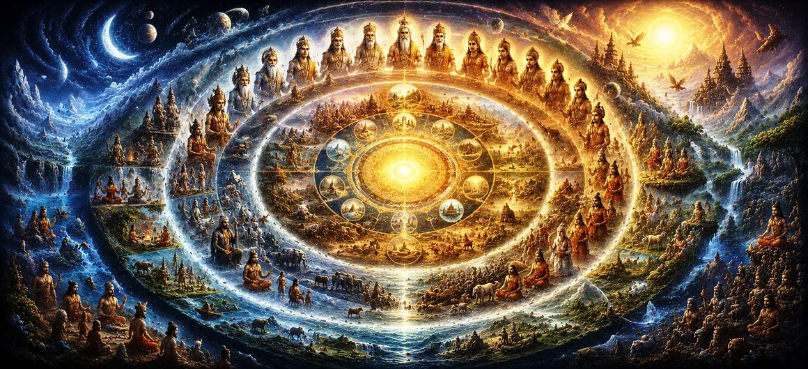

मनु के चक्र
उमा संहिता के अध्याय 34 में, ब्रह्मांडीय रचना की भव्य व्याख्या हिंदू कालक्रम और सार्वभौमिक समय चक्रों पर विस्तृत फोकस के साथ जारी है। यह अध्याय विशेष रूप से मनु के चक्रों की रूपरेखा प्रस्तुत करता है - भगवान शिव के दिव्य अधिकार के तहत क्रमिक मनु द्वारा शासित विशाल ब्रह्मांडीय युग।
पाठ इस बात पर प्रकाश डालता है कि सृष्टि में समय को किस प्रकार सावधानीपूर्वक संरचित किया गया है। प्रत्येक मन्वंतर एक विशिष्ट युग का प्रतीक है जिसमें देवताओं, प्रबुद्ध संतों और दिव्य शासन की अपनी सभा होती है, जो ब्रह्मांडीय व्यवस्था और धर्म (धर्म) के निरंतर संरक्षण को सुनिश्चित करती है।
इस गहन ब्रह्माण्ड संबंधी विवरण के माध्यम से, पुराण साधकों को अस्तित्व की लयबद्ध नाड़ी को समझने के लिए मार्गदर्शन करता है, और हमें याद दिलाता है कि सभी ब्रह्मांडीय चक्र सर्वोच्च भगवान की शाश्वत इच्छा पर नृत्य करते हैं।
अध्याय 34 की मुख्य बातें
ब्रह्मांडीय समय रूपरेखा
सार्वभौमिक विकास और युगों के भव्य अस्थायी पैमाने की जांच करता है।
चौदह मन्वन्तर
चौदह विशिष्ट ब्रह्मांडीय शासकों द्वारा शासित क्रमिक युगों का विवरण।
सप्तऋषियों की भूमिका
हर युग में सात ऋषियों की मार्गदर्शक उपस्थिति पर प्रकाश डाला गया है।
दिखाता है कि कैसे सार्वभौमिक कानून और नैतिक अखंडता को चक्रों में बरकरार रखा जाता है।
परिवर्तन एवं नवीनीकरण
क्रमिक मन्वन्तरों के बीच चिकित्सीय ब्रह्मांडीय पुनर्स्थापनों की पड़ताल करता है।
ईश्वरीय संप्रभुता
समय और सृष्टि पर भगवान शिव के सर्वोच्च आदेश को पुष्ट करता है।
इस अध्याय में मुख्य विषय
- 01 मन्वन्तर की संरचनात्मक अवधारणा →
- 02 चौदह मनुओं की गणना →
- 03 इंद्रों और दिव्य सभाओं का उत्तराधिकार →
- 04 सप्तर्षि वैदिक ज्ञान के संरक्षक के रूप में →
- 05 युगों के बीच परिवर्तन की यांत्रिकी →
- 06 कार्मिक शुद्धि और ग्रहों का नवीनीकरण →
- 07 बदलते युगों में धर्म को कायम रखना →
- 08 भगवान शिव की अनंत ब्रह्मांडीय लीला →
- 09 लौकिक भ्रम से परे (माया) →
- 10 ब्रह्मांडीय युगों को वर्तमान युग से जोड़ना →
मन्वन्तर की संरचनात्मक अवधारणा
अध्याय 34 सार्वभौमिक समय के विशाल पैमाने की स्थापना के साथ शुरू होता है, जहां सृष्टि आवर्ती ब्रह्मांडीय चक्रों के माध्यम से प्रकट होती है जिन्हें कल्प और मन्वंतर के रूप में जाना जाता है। एक मन्वंतर एक मनु के कार्यकाल का प्रतिनिधित्व करता है - एक युग के ब्रह्मांडीय पूर्वज, कानून निर्माता और प्रशासक।
ऐसा प्रत्येक काल दैवीय निरीक्षण के तहत उस युग के दौरान रहने वाले प्राणियों के उत्थान के लिए डिज़ाइन की गई विशिष्ट सामाजिक संरचनाओं, नैतिक दिशानिर्देशों और आध्यात्मिक अनुशासनों की स्थापना का गवाह बनता है।
इस राजसी ढांचे को समझना भौतिक परिस्थितियों में स्थायित्व के भ्रम को रोकता है, जो गंभीर साधक को शाश्वत आध्यात्मिक सत्य की ओर इंगित करता है।
चौदह मनुओं की गणना
धर्मग्रंथ में सावधानीपूर्वक उन चौदह मनुओं की गणना की गई है जो एक पूर्ण कल्प का संचालन करते हैं। स्वायंभुव मनु से लेकर वैवस्वत और उसके बाद के भविष्य के मनु तक, प्रत्येक उत्तराधिकार सृजन की एक नई लहर लाता है।
यह व्यवस्थित परिवर्तन ब्रह्मांड की लयबद्ध नाड़ी को उजागर करता है, यह दर्शाता है कि सृष्टि में कुछ भी स्थिर नहीं है; सभी चीजें भगवान शिव की शाश्वत ब्रह्मांडीय लय पर नृत्य करती हैं।
इन प्राचीन युगों को दर्ज करके, पुराण समय की अकल्पनीय अवधि में ब्रह्मांडीय शासन की अखंड वंशावली को संरक्षित करता है।
इंद्रों और दिव्य सभाओं का उत्तराधिकार
प्रत्येक मनु के साथ, पाठ में दिव्य लोकों के बदलते प्रशासन का विवरण दिया गया है, जिसमें इंद्रों का उत्तराधिकार, देवताओं के समूह और उस विशेष मन्वंतर के लिए विशिष्ट स्वर्गीय पदानुक्रम शामिल हैं।
ये दिव्य संस्थाएँ निर्दिष्ट ब्रह्मांडीय कार्यों को पूरा करती हैं, सार्वभौमिक शक्तियों के संतुलन को बनाए रखती हैं और यह सुनिश्चित करती हैं कि ग्रह प्रणालियों में धर्म को उचित रूप से पुरस्कृत किया जाए।
इन दिव्य संयोजनों की गतिशील परस्पर क्रिया सार्वभौमिक जीवन की बहुरूपी अभिव्यक्तियों को नियंत्रित करने वाले परिष्कृत क्रम को दर्शाती है।
सप्तर्षि वैदिक ज्ञान के संरक्षक के रूप में
प्रत्येक मन्वंतर में, सात ऋषियों (सप्तऋषियों) की एक अनोखी सभा अपने निर्धारित कार्यकाल के दौरान ब्रह्मांड के आध्यात्मिक, बौद्धिक और नैतिक विकास का मार्गदर्शन करने के लिए प्रकट होती है।
ये प्रबुद्ध संत शाश्वत ज्ञान के संरक्षक के रूप में कार्य करते हैं, आध्यात्मिक सत्य को आने वाली पीढ़ियों तक पहुंचाते हैं और जब भी नैतिक अंधकार का अतिक्रमण होने का खतरा होता है तो धर्म को फिर से स्थापित करते हैं।
उनकी दृढ़ भक्ति यह सुनिश्चित करती है कि समय के बदलते ज्वार के पार सभी गंभीर साधकों के लिए आध्यात्मिक प्रकाश सुलभ रहे।
युगों के बीच परिवर्तन की यांत्रिकी
अध्याय 34 मन्वंतरों के बीच परिवर्तन की यांत्रिकी पर विस्तार से बताता है, जहां भौतिक विघटन दैवीय अध्यादेश के तहत आध्यात्मिक विकास के एक नए चक्र के लिए जमीन तैयार करता है।
अंतिम अर्थ में ये परिवर्तन न तो यादृच्छिक हैं और न ही विनाशकारी; वे चिकित्सीय ब्रह्मांडीय रीसेट हैं जो थके हुए कर्मों को दूर करते हैं और ग्रह लोकों को ताज़ा करते हैं।
इस चक्रीय नवीनीकरण के माध्यम से, भगवान शिव अस्तित्व के अनंत विस्तार में आत्मा के विकास और ब्रह्मांडीय खेल के लिए अनंत संभावनाएं बनाए रखते हैं।
कार्मिक शुद्धि और ग्रहों का नवीनीकरण
कथा बताती है कि कैसे एक युग में संचयी कर्म प्राकृतिक परिपक्वता तक पहुंचते हैं, जिसके लिए अगले मनु के कार्यभार संभालने से पहले एक भव्य ब्रह्मांडीय समाशोधन की आवश्यकता होती है।
यह सावधानीपूर्वक सफाई यह सुनिश्चित करती है कि प्रत्येक नया मन्वंतर परिष्कृत ऊर्जा के साथ शुरू होता है, जो देहधारी आत्माओं को मुक्ति पाने के लिए नए अवसर प्रदान करता है।
इन ब्रह्मांडीय रीसेटों का ज्ञान साधकों को अस्थायी सांसारिक परिवर्तनों से डरे बिना अपने स्वयं के आंतरिक जीवन को शुद्ध करने के लिए प्रेरित करता है।
बदलते युगों में धर्म को कायम रखना
अध्याय 34 का एक केंद्रीय संदेश यह है कि जबकि बाहरी रूप और शासक प्रत्येक मन्वंतर के साथ बदलते हैं, धर्म के मूलभूत सिद्धांत शाश्वत रूप से सुसंगत रहते हैं।
मनु और ऋषि प्रत्येक युग में रहने वाले प्राणियों की विशिष्ट मनोवैज्ञानिक और शारीरिक स्थितियों के अनुरूप आध्यात्मिक कानूनों के अनुप्रयोग को अनुकूलित करते हैं।
यह दिव्य अनुकूलन क्षमता इस बात की गारंटी देती है कि सृष्टि से धर्म कभी भी स्थायी रूप से नष्ट नहीं होती है, हर युग में हमेशा नए चैंपियन ढूंढती रहती है।
भगवान शिव की अनंत ब्रह्मांडीय लीला
मन्वन्तरों की गणना के दौरान, पाठ लगातार भगवान शिव को सभी लौकिक लय के सर्वोच्च स्रोत और नियंत्रक के रूप में इंगित करता है।
प्रत्येक ब्रह्मांडीय सृजन, संरक्षण और विघटन उनकी दिव्य खेल (लीला) की अभिव्यक्ति मात्र है, जो उनकी सर्वोच्च ब्रह्मांडीय ऊर्जा के माध्यम से सहजता से निष्पादित होती है।
इस सर्वोच्च वास्तविकता को पहचानने से भक्त अस्तित्व संबंधी चिंता से मुक्त हो जाता है, और अपनी चेतना को भगवान के शांतिपूर्ण आलिंगन में स्थापित कर लेता है।
लौकिक भ्रम से परे (माया)
अध्याय 34 में उल्लिखित विशाल लौकिक विस्तार पर विचार करने से अहंकार और सांसारिक जुनून की संकीर्ण सीमाएं टूट जाती हैं, जिससे साधकों को माया से परे कालातीत वास्तविकता की झलक देखने को मिलती है।
जब कोई यह महसूस करता है कि दैवीय परिप्रेक्ष्य में अरबों वर्ष पलक झपकते ही बीत जाते हैं, तो सांसारिक लगाव स्वाभाविक रूप से गहरी भक्ति में विलीन हो जाता है।
यह आंतरिक बदलाव सच्चे आध्यात्मिक जागरण का प्रतीक है, जो लौकिक अस्तित्व को मुक्ति की ओर एक सचेत तीर्थयात्रा में बदल देता है।
ब्रह्मांडीय युगों को वर्तमान युग से जोड़ना
अध्याय 34 मन्वन्तरों के व्यापक अनुक्रम को प्रस्तुत करके समाप्त होता है, जो सीधे अगले अध्याय में वर्तमान सातवें शासक के विस्तृत परिचय की ओर ले जाता है।
स्थूल ब्रह्मांडीय समय चक्रों को हमारे तात्कालिक युग से जोड़कर, पाठ यह सुनिश्चित करता है कि पाठक ब्रह्मांड के विशाल पैमाने और उसके भीतर अपने व्यक्तिगत स्थान दोनों की सराहना करें।
यह संरचनात्मक प्रतिभा सौर राजवंश और वैवस्वत मनु से उत्पन्न शाही वंश की खोज के लिए मंच तैयार करती है।
अध्याय 34 की मुख्य शिक्षाएँ
समय की चक्रीय प्रकृति
समय विशाल और चक्रीय है, जो शिव के आदेश के तहत संगठित युगों के माध्यम से संचालित होता है।
ईश्वरीय शासन
प्रत्येक मन्वन्तर को समर्पित मनु, ऋषियों और देवताओं द्वारा सावधानीपूर्वक संचालित किया जाता है।
चौदह उत्तराधिकार
एक पूर्ण कल्प में अलग-अलग पूर्वजों द्वारा देखे गए चौदह ब्रह्मांडीय युग शामिल होते हैं।
युगों-युगों तक धर्म
बदलते ब्रह्मांडीय चक्रों में धर्म लगातार संरक्षित और अनुकूलित होती रहती है।
क्षणभंगुर को पार करना
ब्रह्मांडीय समय के पैमाने को पहचानने से साधकों को शाश्वत आध्यात्मिक मुक्ति की तलाश करने की प्रेरणा मिलती है।
सर्वोच्च संप्रभुता
सभी ब्रह्मांडीय आदेश और लौकिक लय अंततः भगवान शिव की दिव्य इच्छा से उत्पन्न होते हैं।
आध्यात्मिक चिंतन
उमा संहिता का अध्याय 34 हमें अपनी तात्कालिक सांसारिक चिंताओं से पीछे हटने और ब्रह्मांडीय समय की राजसी वास्तुकला पर विचार करने के लिए आमंत्रित करता है। चौदह मन्वंतरों की गणना का विवरण देकर, पुराण एक ऐसे ब्रह्मांड का खुलासा करता है जो अंध संयोग के बजाय सर्वोच्च बुद्धि द्वारा शासित होता है। साम्राज्यों का उदय और पतन होता है, और युग दैवीय अध्यादेश के तहत बदलते हैं, फिर भी धर्म की मूल गति शाश्वत बनी रहती है। इस भव्य ब्रह्मांडीय कालक्रम के भीतर अपनी जगह को समझने से हमें विनम्रता विकसित करने, मानव जन्म के अनमोल अवसर की सराहना करने और भगवान शिव की अपरिवर्तनीय दिव्य वास्तविकता को महसूस करने के लिए अपना जीवन समर्पित करने में मदद मिलती है।
अध्याय 34 का संदेश जीना
इस अध्याय के ज्ञान को एकीकृत करने में जीवन की अस्थायी चुनौतियों पर व्यापक परिप्रेक्ष्य विकसित करना शामिल है। व्यक्तिगत परीक्षणों का सामना करते समय, याद रखें कि दिव्य देखभाल के तहत समय भव्य, उपचारात्मक चक्रों में बहता है।
अपने कार्य और सेवा को ईश्वर के प्रति पवित्र प्रसाद मानकर ईमानदारी और समर्पण के साथ अपनी दैनिक जिम्मेदारियों का सम्मान करें।
दुनिया के बदलते ज्वार के बीच स्थायी आंतरिक शांति पाने के लिए, क्षणभंगुर घटनाओं के पीछे की शाश्वत वास्तविकता पर ध्यान करने के लिए शांत क्षण समर्पित करें।
प्रमुख आध्यात्मिक अवधारणाएँ
एक ब्रह्मांडीय समय अवधि या चक्र जो एक विशिष्ट मनु और दिव्य सभा द्वारा शासित होता है।
एक विशाल ब्रह्मांडीय युग जिसमें चौदह मन्वंतर और सार्वभौमिक चक्र शामिल हैं।
सात ऋषि जो आध्यात्मिक ज्ञान को संरक्षित करने के लिए प्रत्येक मन्वंतर में प्रकट होते हैं।
एक विशिष्ट मन्वन्तर के दौरान देवताओं पर शासन करने वाला मुख्य खगोलीय प्रशासक।
शाश्वत नैतिक कानून और धर्म सभी युगों में सार्वभौमिक व्यवस्था को कायम रखती है।
ब्रह्मांडीय भ्रम अपरिवर्तनीय आध्यात्मिक वास्तविकता को अज्ञानी प्राणियों से छुपाता है।
अध्याय सारांश
उमा संहिता अध्याय 34 शिव पुराण के भीतर समय और सार्वभौमिक शासन का एक शानदार ब्रह्माण्ड संबंधी अवलोकन प्रदान करता है। अध्याय में चौदह मन्वंतरों की संरचनात्मक गणना का विवरण दिया गया है, जिसमें बताया गया है कि कैसे क्रमिक युगों को शिव के व्यापक ब्रह्मांडीय अधिकार के तहत दिव्य मनु, सप्तऋषियों, इंद्रों और देवताओं द्वारा प्रशासित किया जाता है। युग परिवर्तन और कर्म शुद्धिकरण के तंत्र की जांच करके, पाठ इस बात पर जोर देता है कि कैसे ब्रह्मांडीय व्यवस्था बदलते चक्रों में शाश्वत धर्म को बनाए रखता है। यह गहन रूपरेखा साधकों को अस्थायी भौतिक भ्रमों से परे जाने और भगवान शिव की अपरिवर्तनीय दिव्य वास्तविकता में अपनी जागरूकता स्थापित करने के लिए प्रेरित करती है।
अक्सर पूछे जाने वाले प्रश्न
① उमा संहिता अध्याय 34 का प्राथमिक विषय क्या है?
अध्याय 34 विभिन्न मन्वंतरों की संरचनात्मक गणना और क्रमिक मनु द्वारा शासित विशाल ब्रह्मांडीय समय अवधि पर केंद्रित है।
② मन्वंतर क्या है?
मन्वंतर एक कल्प के भीतर एक ब्रह्मांडीय समय अवधि या चक्र है, जिसकी अध्यक्षता विशिष्ट देवताओं, ऋषियों और दिव्य अवतारों के साथ एक विशिष्ट मनु द्वारा की जाती है।
③ एक पूर्ण कल्प कितने मन्वन्तरों से बनता है?
एक पूर्ण कल्प में लगातार चौदह मन्वंतर शामिल होते हैं, प्रत्येक की देखरेख एक विशिष्ट ब्रह्मांडीय शासक और ऋषियों की सभा द्वारा की जाती है।
④ प्रत्येक मन्वंतर में सात ऋषियों की क्या भूमिका होती है?
सात ऋषि (सप्तर्षि) वैदिक ज्ञान के संरक्षक के रूप में कार्य करते हैं, अपने विशिष्ट युग के दौरान प्राणियों के आध्यात्मिक और नैतिक विकास का मार्गदर्शन करते हैं।
⑤ ये ब्रह्मांडीय चक्र भगवान शिव से कैसे संबंधित हैं?
सभी ब्रह्मांडीय चक्र, समय की रूपरेखा और सार्वभौमिक विघटन भगवान शिव की सर्वोच्च दिव्य इच्छा और संप्रभुता के तहत प्रकट होते हैं।
⑥ ब्रह्मांडीय कालक्रम का अध्ययन भक्तों के लिए क्यों लाभदायक है?
विशाल ब्रह्मांडीय समय के पैमाने को समझने से साधकों को अस्थायी भौतिक लगाव से परे जाने और अपने दिलों को शाश्वत आध्यात्मिक सच्चाइयों में स्थापित करने में मदद मिलती है।
"विशाल ब्रह्मांडीय युगों के बदलते ज्वारों के बीच, भगवान शिव के ब्रह्मांडीय व्यवस्था की शाश्वत रोशनी हमेशा अटल रहती है।"
उमा संहिता के माध्यम से जारी रखें
अध्याय 34 में मनु के चक्रों का विवरण दिया गया है। इन ब्रह्मांडीय समय चक्रों की स्थापना के साथ, वैवस्वत मनु की आयु और वंश का पता लगाने के लिए अध्याय 35 में आगे बढ़ें।